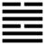

Thuần Đoài (兌 duì)
Tốn có nghĩa là nhập vào, hễ nhập được vào lòng nhau, hiểu lòng nhau, thì mới ưa nhau mà hoà duyệt, vui vẻ với nhau, cho nên sau quẻ Tốn tới quẻ Đoài. Đoài là chằm mà cũng có nghĩa là hoà duyệt.
Thoán từ:
兌; 亨．利貞．
Đoài; Hanh. Lợi trinh.
Dịch: Vui thì hanh thông. Hợp đạo chính thì lợi.
Giảng: Đoài là chằm, cũng là thiếu nữ. Nước chằm làm cho cây cỏ vui tươi, sinh vật vui thích; thiếu nữ làm cho con trai vui thích. Vui thích thì hanh thông, miễn là phải hợp với đạo chính; phải ngay thẳng, thành thực, đoan chính. Đoài có hai hào dương ở phía trong, một hào âm ở ngoài, nghĩa là trong lòng phải thành thực rồi ngoài mặt nhu hoà, như vậy là hợp với đạo chính, tốt.
Thoán truyện – Giảng rộng ra: vui vẻ mà hợp với đạo chính thì là thuận với trời, hợp với người. Vui vẻ mà đi trước dân thì dân quên khó nhọc; vui vẻ mà xông vào chốn nguy hiểm thì dân quên cái chết mà cũng xông vào; đạo vui vẻ (làm gương cho dân) thật lớn thay; khuyến khích dân không gì bằng.
Đại Tượng truyên thiên về sự tu thân, khuyên người quân tử nên họp bạn cùng nhau giảng nghĩa lý, đạo đức, rồi cùng nhau thực hành (dĩ bằng hữu giảng tập), để giúp ích cho nhau mà hai bên cùng vui vẻ.
Ý nghĩa các hào :
1.
初九: 和兌吉．
Sơ cửu: Hoà đoái, cát.
Dịch: Hào 1, dương: Hoà thuận, vui vẻ, tốt.
Giảng: dương ở dưới cùng quẻ đoài là quân tử mà khiêm hạ, ở trên lại không tư tình với ai (vì 4 cũng là dương, không phải là âm, tiểu nhân), nên chỉ dùng đạo chính mà hoà thuận vui vẻ với mọi người, tốt.
2.
九二．孚兌吉．悔亡．
Cửu nhị: Phu đoài, cát, hối vong.
Dịch: Hào 2, dương: Trung trực mà vui vẻ, tốt, hối hận mất đi.
Giảng: Ở gần hào 3, âm nhu, tiểu nhân, nhưng hào 2 này đã dương cương mà lại đắc trung, cho nên có đức thành thực cương trung, không nhiễm xấu của hào 3, không bị hối hận.
3.
六三: 來兌凶．
Lục tam: Lai đoài, hung.
Dịch: Hào 3, âm: Quay lại cầu vui với người ở dưới, xấu.
Giảng: Âm nhu, bất trung bất chính, là hạng tiểu nhân tìm vui mà không giữ đạo; là phận gái ở giữa bốn người con trai (4 hào dương, 2 ở trên, 2 ở dưới), cầu vui với 2 người ở trên, thì không dám vì phận thấp, phải quay lại cầu với 2 người ở dưới, nhưng họ cũng không thèm, vì hào 1 cương trực mà chính, hào 2 cương trực mà trung, kết quả là xấu.
4.
九四: 商兌, 未寧, 介疾,有喜．
Cửu tứ; Thương đoài, vị ninh, giới tật, hữu hỉ.
Dịch: Hào 4, dương: cân nhắc xem nên cầu vui ở phía nào mà chưa quyết định được rồi sau theo chính bỏ tà, đáng mừng.
Giảng: Dương cương mà ở vị âm, chưa thật là quân tử, ở trên thừa tiếp hào 5 vừa trung vừa chính, nhưng ở dưới lại gần hào 3, tiểu nhân, cho nên mới đầu do dự, cân nhắc xem nên hướng về phía nào; nhưng nhờ có đức dương cương, đồng đức với 5, nên sau hướng về 5, quyết tâm bỏ tà theo chính, thật đáng mừng.
5.
九五: 孚于剝, 有厲．
Cửu ngũ : Phu vu bác, hữu lệ.
Dịch: Hào 5, dương: Nếu tin kẻ tiểu nhân mà tiêu mòn (bác) hết đức trung chính của mình thì nguy.
Giảng: Hào này dương cương, trung chính, địa vị chí tôn, ở vào thời Đoái mà thân cận với hào trên cùng âm nhu là kẻ tiêu nhân làm chủ sự vui, rồi ham vui bậy bạ thì nguy; đây là lời răn kẻ trị nước.
6.
上六: 引兌．
Thượng lục: Dẫn đoài.
Dịch: Hào trên cùng, âm: Đem sự vui thú tới.
Giảng: Ở trên cùng quẻ Đoài mà âm nhu là kẻ chuyên siểm nịnh, dụ dỗ người ta tìm vui một cách bất chính. Tất nhiên là xấu rồi, chẳng cần nói.